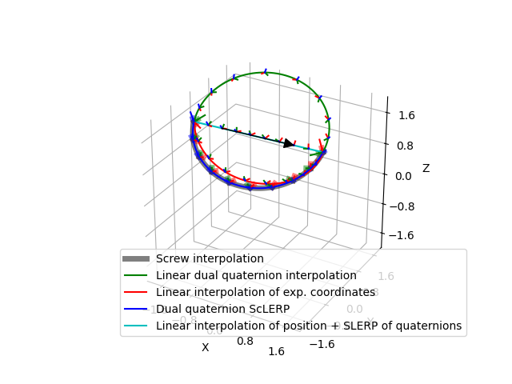

Note
Click here to download the full example code
Dual Quaternion Interpolation¶
This example shows interpolated trajectories between two random poses. The red line corresponds to linear interpolation with exponential coordinates, the green line corresponds to linear interpolation with dual quaternions, and the blue line corresponds to screw linear interpolation (ScLERP) with dual quaternions. The true screw motion from pose 1 to pose 2 is shown by a thick, transparent black line in the background of the ScLERP interpolation.
import numpy as np
import matplotlib.pyplot as plt
import pytransform3d.transformations as pt
import pytransform3d.trajectories as ptr
import pytransform3d.plot_utils as ppu
rng = np.random.default_rng(25)
pose1 = pt.random_transform(rng)
pose2 = pt.random_transform(rng)
dq1 = pt.dual_quaternion_from_transform(pose1)
dq2 = -pt.dual_quaternion_from_transform(pose2)
Stheta1 = pt.exponential_coordinates_from_transform(pose1)
Stheta2 = pt.exponential_coordinates_from_transform(pose2)
n_steps = 100
# Ground truth screw motion: linear interpolation of rotation about and
# translation along the screw axis
pose12pose2 = pt.concat(pose2, pt.invert_transform(pose1))
screw_axis, theta = pt.screw_axis_from_exponential_coordinates(
pt.exponential_coordinates_from_transform(pose12pose2))
offsets = np.array(
[pt.transform_from_exponential_coordinates(screw_axis * t * theta)
for t in np.linspace(0, 1, n_steps)])
interpolated_poses = np.array([
pt.concat(offset, pose1) for offset in offsets])
# Linear interpolation of dual quaternions
interpolated_dqs = (np.linspace(1, 0, n_steps)[:, np.newaxis] * dq1 +
np.linspace(0, 1, n_steps)[:, np.newaxis] * dq2)
# renormalization (not required here because it will be done with conversion)
interpolated_dqs /= np.linalg.norm(
interpolated_dqs[:, :4], axis=1)[:, np.newaxis]
interpolated_poses_from_dqs = np.array([
pt.transform_from_dual_quaternion(dq) for dq in interpolated_dqs])
# Screw linear interpolation of dual quaternions (ScLERP)
sclerp_interpolated_dqs = np.vstack([
pt.dual_quaternion_sclerp(dq1, dq2, t)
for t in np.linspace(0, 1, n_steps)])
sclerp_interpolated_poses_from_dqs = np.array([
pt.transform_from_dual_quaternion(dq) for dq in sclerp_interpolated_dqs])
# Linear interpolation of exponential coordinates
interpolated_ecs = (np.linspace(1, 0, n_steps)[:, np.newaxis] * Stheta1 +
np.linspace(0, 1, n_steps)[:, np.newaxis] * Stheta2)
interpolates_poses_from_ecs = ptr.transforms_from_exponential_coordinates(
interpolated_ecs)
ax = pt.plot_transform(A2B=pose1, s=0.3, ax_s=2)
pt.plot_transform(A2B=pose2, s=0.3, ax=ax)
traj = ppu.Trajectory(interpolated_poses, s=0.1, c="k", lw=5, alpha=0.5)
traj.add_trajectory(ax)
traj_from_dqs = ppu.Trajectory(interpolated_poses_from_dqs, s=0.1, c="g")
traj_from_dqs.add_trajectory(ax)
traj_from_ecs = ppu.Trajectory(interpolates_poses_from_ecs, s=0.1, c="r")
traj_from_ecs.add_trajectory(ax)
traj_from_dqs_sclerp = ppu.Trajectory(
sclerp_interpolated_poses_from_dqs, s=0.1, c="b")
traj_from_dqs_sclerp.add_trajectory(ax)
plt.legend(
[traj.trajectory, traj_from_dqs.trajectory, traj_from_ecs.trajectory,
traj_from_dqs_sclerp.trajectory],
["Screw interpolation", "Linear dual quaternion interpolation",
"Linear interpolation of exp. coordinates", "Dual quaternion ScLERP"])
plt.show()
Total running time of the script: ( 0 minutes 0.275 seconds)